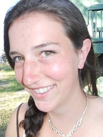
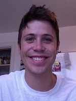
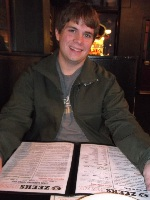
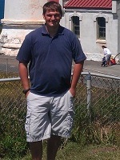
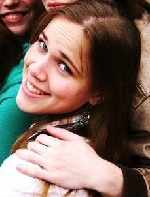

Kora Barnes

Kora Barnes hails from the state of Montana. Her interest in all things outdoors as well as control systems and electronics attracted her to F.E.T.C.H. She is a senior in Electrical Engineering looking at graduating in December 2013. After receiving her Bachelors she will either look for jobs in embedded design or head to graduate school. When she finds a bit of free time she enjoys skiing, rugby, soccer, rock climbing, or board games.
Elliot Dickenson

Elliot is a senior in Computer Engineering hoping to graduate this fall. He signed up for F.E.T.C.H. because of an interest in quadcopters and a love for the outdoors. He is currently working as a web developer at Economic Modeling Specialists International. He enjoys speaking spanish, skiing, photography, and the web.
Cable Johnson
Cable Johnson is a senior in Computer Science, expecting to graduate this spring (2013). After graduating he will pursue jobs in software development. Cable was drawn to F.E.T.C.H. because of his interest in embedded systems and trees. During his free time Cable enjoys snowboarding, karate, playing bass and cutting firewood.
Eric Johnston

Eric Johnston is a Senior in Electrical Engineering with an expected graduation in spring of 2014. He signed up for F.E.T.C.H because he loves working with microcontrollers and small electronics, as well as being outdoors. He is currently involved in research for the Advanced Pedestrian Crossing system and with the school’s Electromagnetic Accelerator project, in addition to being a tour guide for the University. In his free time he likes to ski, camp, play video games, and target practice.
Brian Lee

Brian Lee is a Computer Engineering Major at the University of Idaho. He has focused mainly on embedded systems. Has worked in retail, IT, and horse training.
Theora Rice

Theora Rice is an undergraduate student of computer science at the University of Idaho. She has spent most of her years living in Idaho or Washington, and has been intrigued with computers since reading her first cyberpunk novel. Cyber security, in particular, peaked her interest early in her studies and has kept her attention ever since, due to it's incredible importance to the modern individual. Throughout her career at the University of Idaho, she has been trained in programming languages, software design and implementation, malware analysis and forensics, network design, and much more. She will be graduating with her Bachelor's degree in Spring of 2013, and then move on to graduate with her Master's in Spring of 2014.